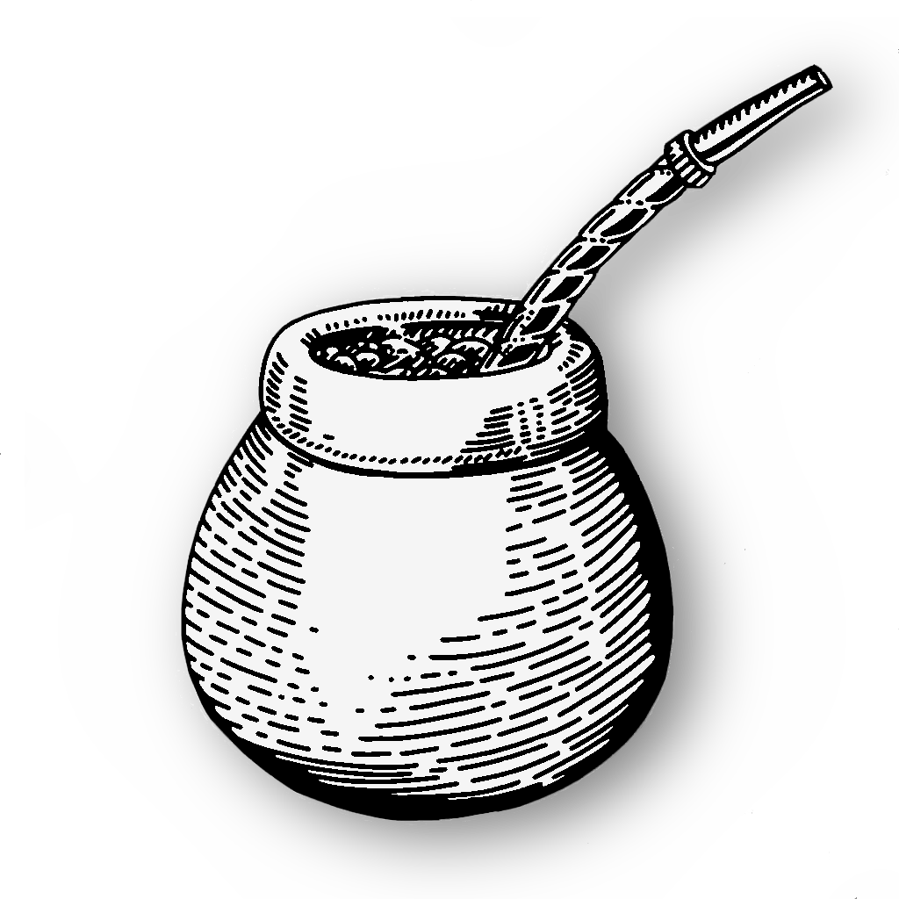

Mate Criollo

Mate is a traditional drink in some countries in South America, especially in Argentina, Paraguay, Uruguay,
Chile, Bolivia and Brazil.
The drink, which contains mateine (an analog of caffeine), is made by an infusion of dried leaves of yerba mate
(Ilex paraguariensis).
It is usually drunk with friends and served in a hollow calabash gourd with a
"Bombilla", a special metallic drinking straw.
Ingredients
- Yerba Mate
- Hot Water at (70-80)°C / (160-180)°F, without boiling
Instructions
- Fill a cured mate cup just over half full with yerba mate.
Tilt the gourd until the tea covers the side
and almost reaches the top.Yerba Mate
- Before putting the straw in, pour hot water onto the bottom half of the drink.
- Relax while the yerba mate leaves absorb the water. This awakens the tea.
- Put the filtered end of the mate straw into the tea at an angle.
- Pour hot, not boiling, water into the yerba mate tea and drink.